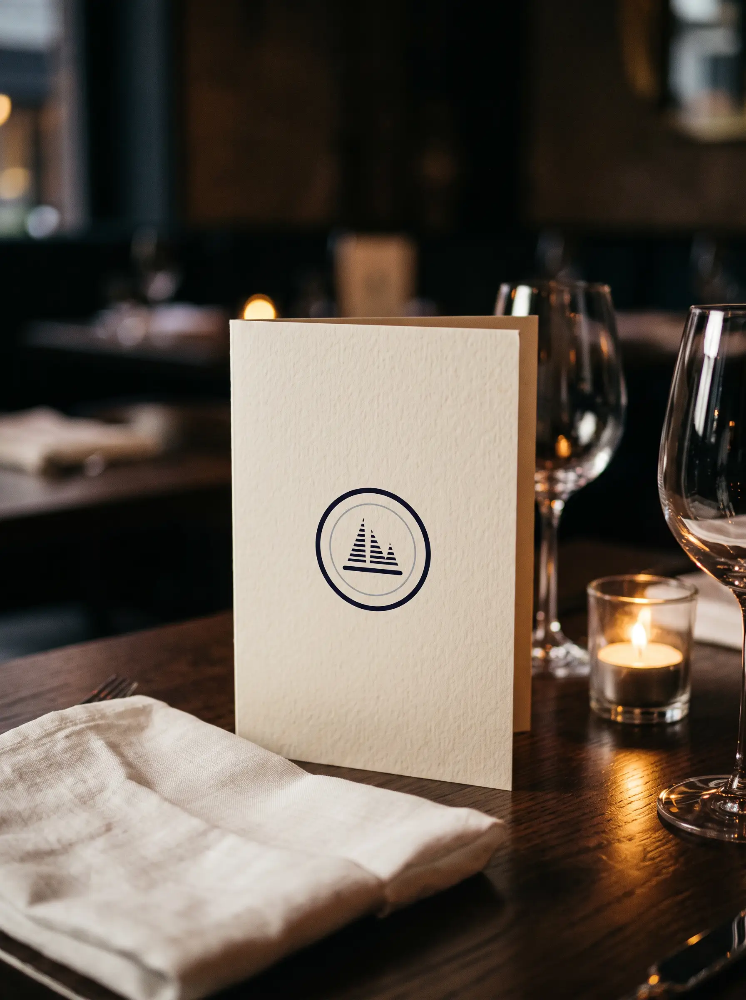
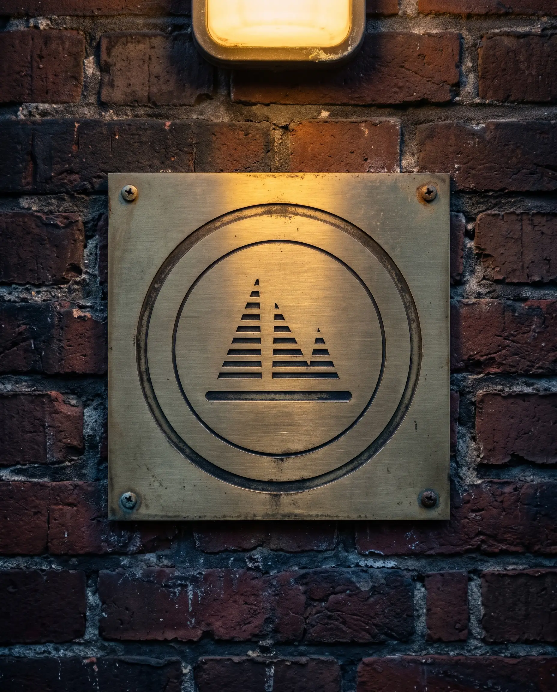
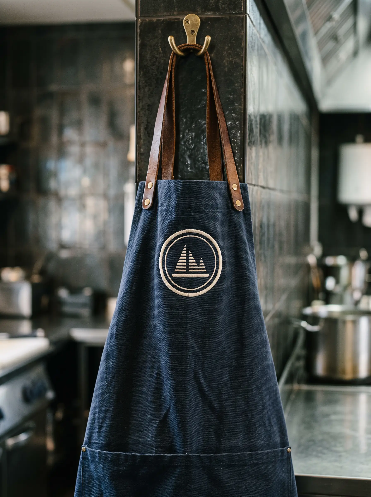
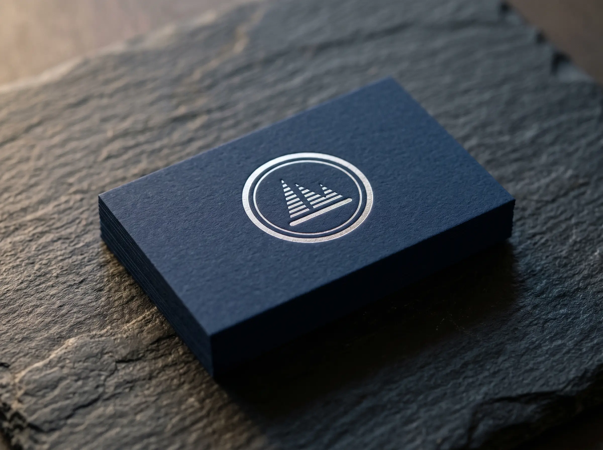
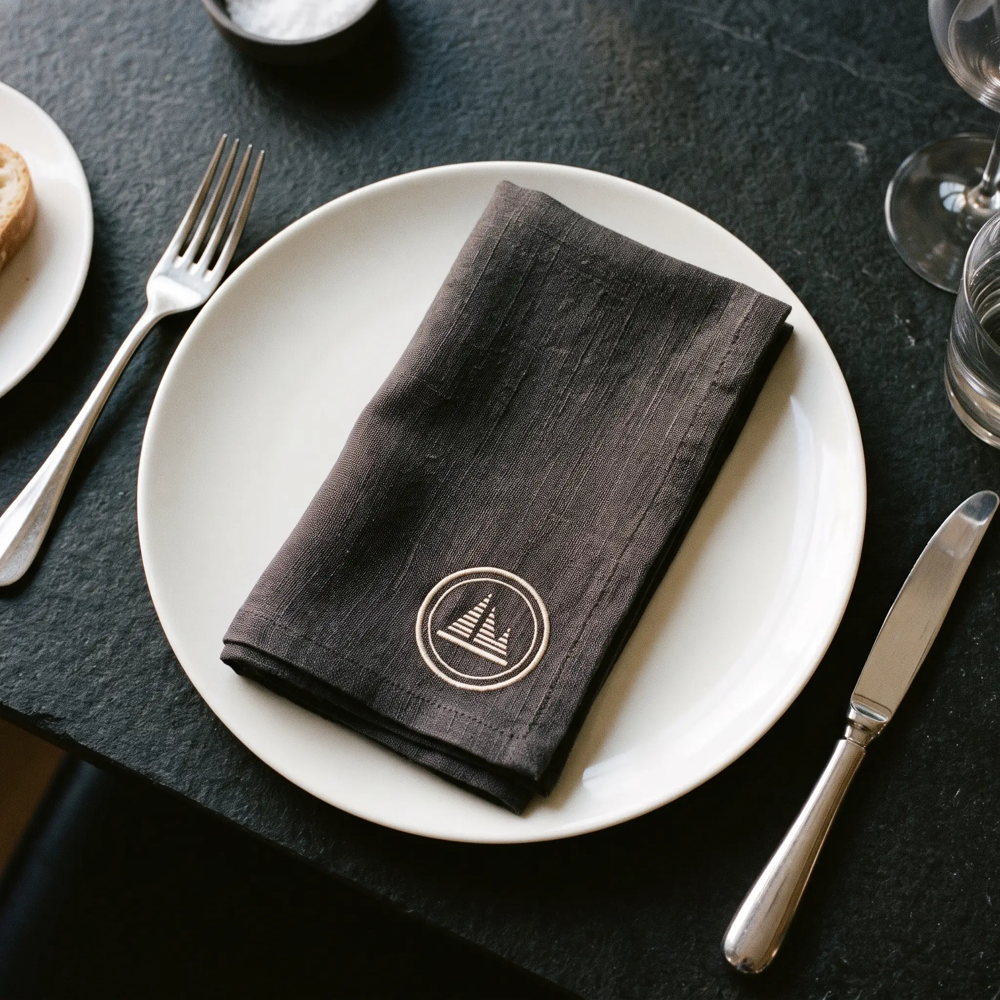
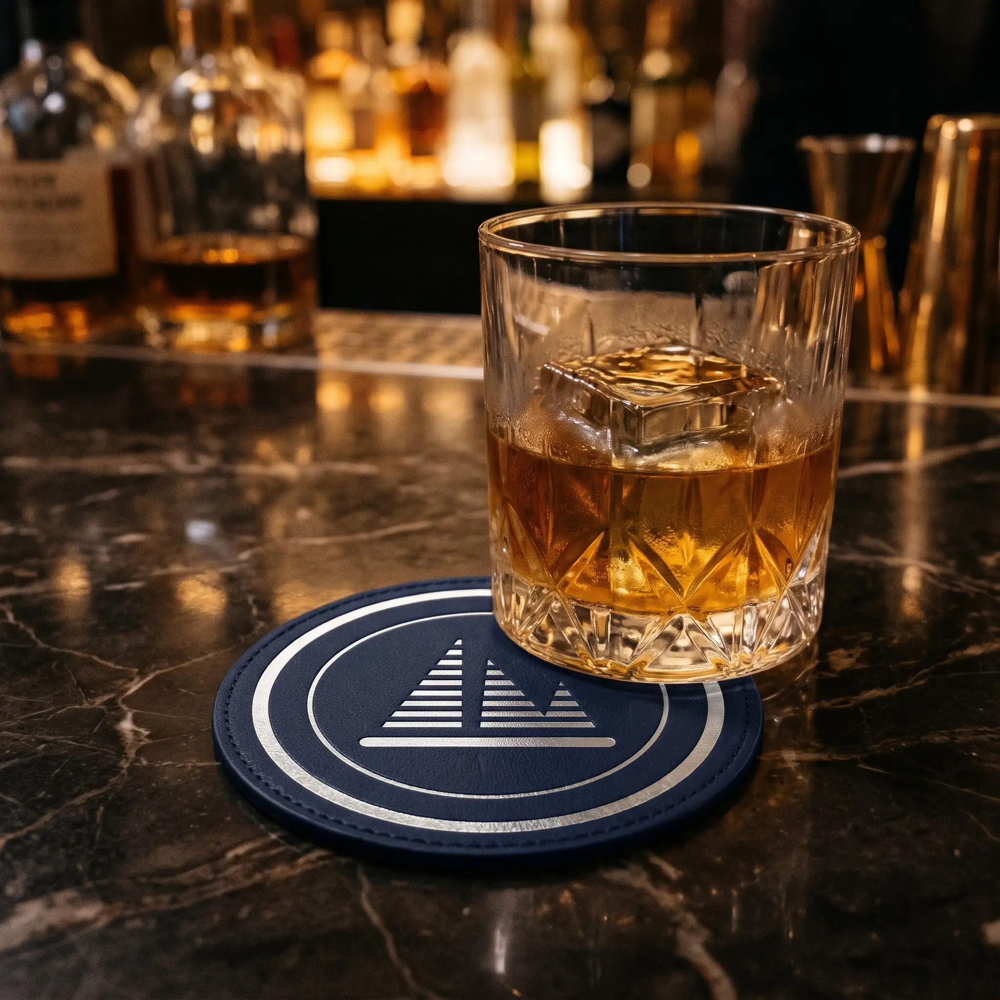
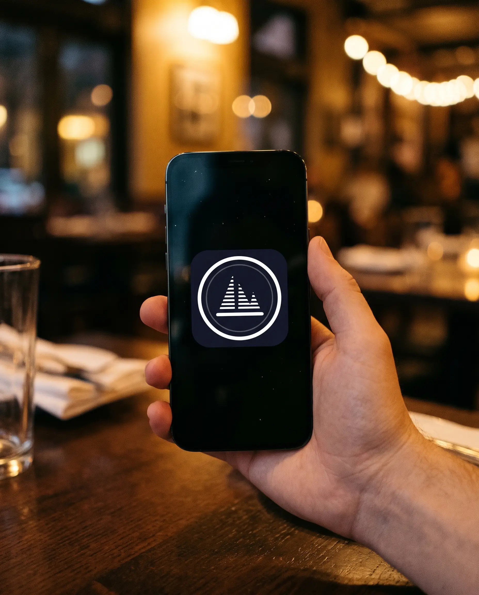
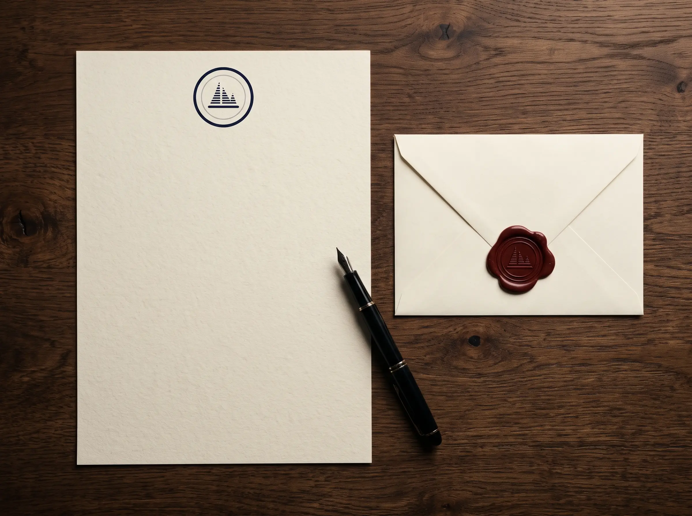
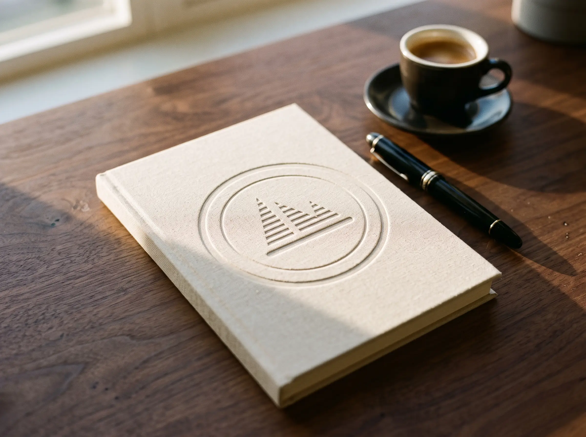
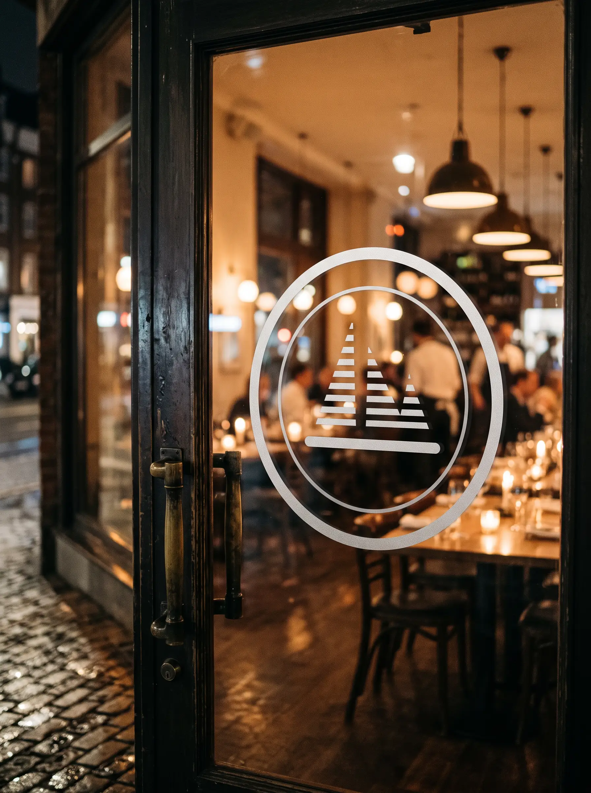
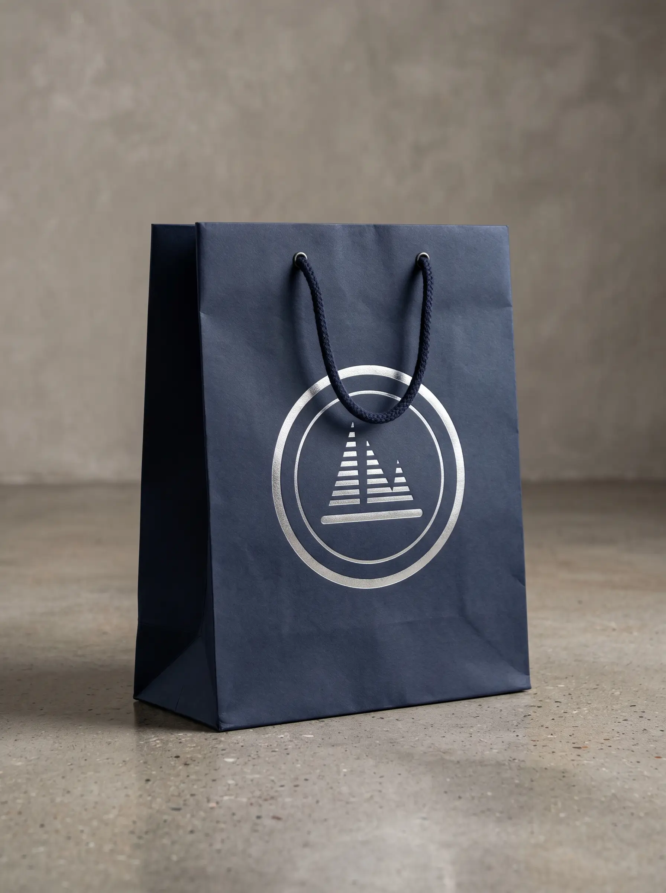
Nachtblau#111421
Navy#1F213B
Creme#EBDBCE
Taupe#9E947F
Silber#C9CCD2
Signal#FF3132
Tasty Studios · Moodboard
Das Zeichen dort, wo es später lebt: am Tisch, in der Küche, an der Wand, auf dem Bildschirm.










